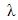
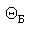
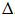

Лазерные фотонаборные автоматы структурно состоят из управляющих устройств и лазерных сканирующих устройств.
Управляющее устройство осуществляет ввод информации об изображении полосы текстового документа и формирует сигнал управления. Эти сигналы управляют модуляцией лазерного луча, разверткой изображения при экспонировании фотоматериала, перемещением фотоматериала, контролируют синхронную работу исполнительных устройств.
В управляющее устройство входит:
Основой управляющего устройства ФНА является ПЭВМ.
Лазерное сканирующее устройство (ЛСУ) включает целый ряд оптических и механических узлов и систем, объединенных с помощью электронных блоков управляющего устройства в сложный оптико-механический комплекс.
В общем случае ЛСУ состоит из лазера, модулятора, телескопа, дефлектора, фокусирующего объектива, кассеты с механизмом привода, систем синхронизации процесса сканирования и коррекции пространственного положения лазерного луча, а также светофильтров, диафрагм, полупрозрачных и отражающих зеркал, призм и других элементов.
Лазеры используются в качестве источников света, обеспечивающих возможность получения высококачественных изображений и обеспечивают высокую монохроматичность и когерентность при малой расходимости светового пучка и большой интенсивности его световой энергии.
В ЛСУ фотонаборных машин широко используются как моломощные газовые лазеры, так и полупроводниковые лазеры - лазерные диоды.
В качестве газовых лазеров применяются аргон-ионные (? = 488 нм), гелий-неоновые (? = 633 нм) и гелий-кадмиевые (? = 442 нм), имеющие достаточно короткую длину волны. Основой таких газовых лазеров является оптический резонатор, состоящий из двух параллельных зеркал: полностью отражающего зеркала 1 и частично пропускающего выходного зеркала 2, активной среды 3 и устройство накачки 4 (рис. 81).
При подаче излучения определенной частоты устройством накачки 4 в активной среде 3 возникает избыток возбужденных атомов. Спонтанные фотоны, возникающие внутри активной среды, взаимодействуют с возбужденными атомами и в конечном счете инициируют мощную лавину фотонов, которые и образуют лазерный луч. В результате отражения от двух параллельных зеркал оптического резонатора увеличивается плотность вынужденного излучения и формируется его направление. Лазерный луч выходит в виде параллельного света из резонатора через выходное зеркало 2, частично пропускающее световое излучение.
Из полупроводниковых лазеров в ЛСУ современных ФНА в качестве источников света используются так называемые полупроводниковые инжекционные лазеры инфракрасного и видимого красного излучения с длиной волны соответственно 780 нм и 670-680 нм.
Инжекционный лазер представляет собой полупроводниковый двухэлектродный прибор с pn-переходом (поэтому часто их называют лазерными диодами), в котором генерация монохроматичного когерентного излучения основана на инжекционной накачке при протекании прямого тока через pn-переход.
Инжекционные лазеры по сравнению с газовыми имеют ряд достоинств:
Полупроводниковым инжекционным лазерам присущи и определенные недостатки, к наиболее существенным можно отнести следующие:
Однако некоторые из указанных недостатков сегодня являются устранимыми. Так, например, для устранения эллиптического астигматизма гауссов пучок пропускают через скрещенные цилиндрические линзы (рис. 82), преобразуя его эллипсовидную форму в световой пучок круглого сечения.
В завершение необходимо отметить следующую особенность лазерных источников света, которая значительно влияет на качество получаемого изображения: чем меньше длина волны, тем более четкое пятно (точку) на фотоматериале можно получить.
Точки, у которых оптическая плотность на краях изменяется очень резко, называются "жесткими" (рис. 83, б), а точки с более плавным изменением оптической плотности - "мягкими" (рис. 83, а).
При записи изображений с невысокими линиатурами растра (133-150 lpi) влияние "жесткости" точки практически отсутствует. Однако при высокой линиатуре (200, 300 lpi) "жесткость" точки при записи фотоформы начинает играть принципиальную роль, т. к. для достижения таких линиатур требуется уменьшение лазерного пятна, и минимальный размер точки при указанных линиатурах составляет 20-12 мкм соответственно. Поэтому с целью изменения размера лазерного пятна и повышения его "жесткости" в некоторых ЛСУ используется аппертурная регулировка изменения размера лазерного луча.
Модулятор предназначен для управления интенсивностью лазерного луча по принципу "да - нет" в процессе вывода и регистрации графической информации. В лазерных сканирующих устройствах ФНА применяются электрооптические (ЭОМ) и акустооптические (АОМ) модуляторы.
Принцип работы ЭОМ основан на линейном электрооптическом эффекте, названным эффектом Поккельса и представляющим собой явление изменения показателя преломления света в веществе, пропорциональное изменению приложенного к нему электрического поля. Эффект Поккельса проявляется в пьезокристаллах. Наиболее широкое распространение в ЭОМ получили кристаллы гидрофосфата аммония, гидрофосфата калия, арсенида галлия, телурида кадмия и др.
Схема электрооптического модулятора света.
Если электрооптические кристаллы 3 (рис. 84) поместить между поляризаторами 1, 2 с ортогонально направленными осями поляризации и на вход этой системы направить лазерный пучок I с поляризацией, соответствующей поляризации входного элемента, то при подаче на электроды управляющего напряжения, возникнет выходной световой поток, интенсивность которого достигает максимума при некотором значении этого напряжения, называемого полуволновым.
Зависимость интенсивности выходного светового потока Iвых от управляющего напряжения Uупр (рис. 85) определяется выражением

где I - интенсивность входной световой волны;
m0 - показатель преломления кристалла для обыкновенной волны;
r0 - электрооптический коэффициент;
l - длина модулятора;
 - длина волны светового луча;
d - толщина кристалла.

При отсутствии на электродах управляющего напряжения световой поток будет отсутствовать на выходе ЭОМ.
Таким образом, изменяя напряжение, подаваемое на электроды, точнее, включая или выключая его, можно осуществлять модуляцию светового потока. Время переключения электрооптического модулятора из одного состояния в другое может осуществляться на частотах до 10-3 Гц.
К недостаткам ЭОМ следует отнести значительные потери световой энергии в электрооптическом модуляторе, что приводит к его нагреву и снижает коэффициент контрастности (отношение входящей и выходящей световых мощностей). Другим недостатком ЭОМ является высокое управляющее напряжение (100 В). В последнее время модуляторы этого типа уступают место акустооптическим.
Работа АОМ основана на эффекте дифракции света на оптической решетке, возникшей в прозрачном кристалле в результате воздействия на него акустической ультразвуковой волны.
В качестве акустооптических материалов кристалла используется кварц, молибдат свинца, германий, арсенид галлия, сернистый кадмий, тяжелый флинт (разновидность стекла).
Воздействие на кристалл бегущей ультразвуковой волны вызывает в его материале периодические участки сжатия и растяжения, отличающиеся между собой коэффициентом преломления. В результате этого воздействия образуется оптическая решетка. Луч лазера, попадая на кристалл, дифрагирует на указанной решетке, образуя несколько выходных лучей, разнесенных по направлению и отличающихся по интенсивности. Причем успешную модуляцию АОМ обеспечивают следующие два условия.
Первое - это угол, под которым попадает на кристалл луч лазера и определяемый из равенства
где  - угол Брэгга;
 - длина ультразвуковой волны в акустооптическом кристалле
- длина ультразвуковой волны в акустооптическом кристалле
Второе условие осуществляется при выполнении неравенства
где l - длина акустического кристалла.
При этом наблюдается так называемая дифракция Брэгга, при которой интенсивность всех дифракционных максимумов, кроме первого I1 , становятся пренебрежительно малыми.
Интенсивность этого максимального луча направлена под углом Брэгга и равна

где I0 - интенсивность света при отсутствии ультразвуковой волны;
n - разность коэффициентов преломления акустооптического материала.
Принцип действия АОМ заключается в следующем (рис. 86). Луч света I при отключенном питающем напряжении пьезопреобразователя проходит через кристалл 2 и попадает на диафрагму 4 , которая и преграждает ему путь. В этом случае модулятор прерывает световой поток I0. При подаче на кристалл акустической волны с помощью пьезопреобразователя 1 наблюдается явление дифракции и из кристалла выходит луч света I1. Направление этого луча выбирают так, чтобы оно совпадало с направлением оптической оси системы. В этом случае модулятор открыт, а для прерывания светового луча отключают пьезопреобразователь.

Устройство акустооптического модулятора.
Допустимые частоты модуляции для АОМ достигают 10 МГц.
Основные преимущества АОМ по сравнению с ЭОМ - низкие управляющие напряжения (порядка 10 В), высокий коэффициент контрастности (до 1000), независимость параметров модуляции от температуры, использование неполяризованного света и т. д.
Дефлектор является устройством, преобразующим неподвижный модулированный световой пучок в одномерный растр. Двумерное изображение создается разверткой за счет равномерного перемещения светочувствительного материала. Основными параметрами дефлектора являются максимальный угол отклонения, разрешающая способность и частота сканирования.
В сканирующих устройствах используются акустооптические и оптико-механические дефлекторы с колеблющимися или вращающимися зеркалами.
С работой акустооптического модулятора мы уже познакомились в предыдущем разделе, а сейчас рассмотрим работу акустооптического дефлектора (АОД), которая заключается в следующем. Для отклонения луча на разные углы на кристалл с пьезопреобразователем подают акустические волны разной частоты. Для получения последовательного отклонения луча на угол  1,
1,  2,, …,
2,, …,  n, последовательно подают акустические волны с частотой f1, f2, …, fn. При этом угол отклонения луча
n, последовательно подают акустические волны с частотой f1, f2, …, fn. При этом угол отклонения луча  1 линейно связан с частотой акустической волны f1:
1 линейно связан с частотой акустической волны f1:
где v3 - скорость звуковой волны.
Существующие АОД имеют не очень высокое разрешение и частоту сканирования, обеспечивающую скорость записи информации 1 Мбит/с, угол отклонения таких дефлекторов 5-60.
Акустооптические дефлекторы могут быть и двухкоординатными. В этом случае дефлектор содержит две акустооптические ячейки, одна из которых используется для отклонения луча по оси Х, а другая по оси У.
Из-за невысокого разрешения и малого угла отклонения АОД обычно используется как дополнительный дефлектор, например, при субрастровой записи изображений или в системах коррекции положения лазерного луча при небольших его отклонениях, компенсирующих неточность сканирующей системы.
Оптико-механические дефлекторы в зависимости от конструкции привода делятся на колебательные и вращательные.
Колебательные дефлекторы (рис. 87, а) обычно состоят из ротора и закрепленного на нем зеркала, которое помещается в переменное магнитное поле, создаваемое электромагнитами. С ротором жестко связана пружина, создающая вращательный момент и возвращающая дефлектор в исходное положение. Для записи луча на фотоматериале с постоянной линейной скоростью управление дефлектором должно осуществляться напряжением, изменяющимся по пилообразному закону.
Известные колебательные дефлекторы обеспечивают угол отклонения до 300 при частоте колебаний в несколько сотен герц. Основной недостаток колебательных дефлекторов - относительно низкие скорости сканирования (чем больше размер зеркала, тем ниже эти скорости).

Оптико-механические дефлекторы с вращающимися зеркалами в зависимости от требований, предъявляемых к лазерному сканирующему устройству, могут иметь одну или больше отражающих поверхностей. Системы с одной отражающей поверхностью (рис. 87, б) дают минимальную скорость сканирования, но обеспечивают максимальное качество воспроизведение.
В большинстве лазерных сканирующих устройств применяются дефлекторы с несколькими отражающими зеркалами (гранями). Многогранные зеркальные дефлекторы могут быть либо пирамидальными, либо призменными (рис. 87, в, г). Многогранные дефлекторы позволяют наиболее эффективно использовать время одного цикла сканирования, что обеспечивает высокую скорость сканирования (до 50 Мбит/с), при разрешающей способности до 40 000 элементов на строку. В лазерных сканирующих устройствах с большим форматом записи и высокой разрешающей способностью обычно применяются зеркальные призмы или пирамиды с большим числом граней. В некоторых высокоскоростных печатающих устройствах для вывода текстовой информации из ЭВМ число граней может достигать 36.
Из-за высокой частоты вращения зеркал их изготавливают из высокопрочных сплавов, обеспечивающих минимальную деформацию граней под действием центробежных сил, причем грани располагают с высокой точностью (десятые доли угловой секунды).
В качестве опор многогранников используют сверхточные шариковые подшипники и подшипники на воздушной подушке.
Поверхности зеркал вращающихся дефлекторов делают либо плоскими, либо криволинейными. Криволинейные поверхности с фокусирующим объективом участвуют в фокусировке светового луча на светочувствительном материале.
Конструкция большинства дефлекторов является достаточно сложной, так как состоит из деталей, изготовленных и собранных с высокой точностью, и требует сложной регулировки и юстирования для получения необходимого результата.
Одним из эффективных решений повышения точности записи изображения является применение в качестве одногранного вращающегося зеркала пентапризмы 1 (рис. 88), установленной непосредственно на валу электродвигателя 2. Оптическая особенность ее заключается в том, что угол между входящим и выходящим лучами всегда составляет 900 независимо от того, как точно расположены входная и выходная грани. Это позволяет существенно снизить требования к точности установки вращающейся пентапризмы на валу электродвигателя.

Фокусирующие объективы и телескопические системы. Основной характеристикой ЛСУ, определяющей качество получаемого изображения, является разрешающая способность, которая оценивается размером и формой пятна, сфокусированного на фотоматериале.
Традиционно в ЛСУ используется световое пятно или пучок с круглым сечением. Если такой пучок фокусируется на оптической оси объективом с фокусным расстоянием f, то минимально достижимый диаметр сфокусированного пятна d0 определяется выражением
где 1,22 - коэффициент, учитывающий форму сечения лазерного пучка; Л - длина волны излучения; f - фокусное расстояние; D - ширина входящего в фокусный объектив лазерного пучка.
Поэтому в ЛСУ желательно применять короткофокусный объектив, обеспечивающий получение достаточно малого диаметра пятна, т. е. высокую разрешающую способность системы. Однако на практике для большого формата сканируемого поля приходится пользоваться длиннофокусными объективами, что приводит к увеличению размеров фокусирующей системы. Как видно из вышеприведенной формулы, другая возможность уменьшить диаметр сканирующего пятна и тем самым повысить разрешение - это увеличение ширины D лазерного пучка, входящего в фокусирующий объектив.
Оптические системы в лазерных устройствах с плоскостной разверткой в зависимости от взаимного расположения фокусирующего объектива и развертывающего дефлектора могут быть двух типов: с дообъективной и послеобъективной разверткой. Тип оптической системы не влияет на быстродействие записи изображения и отличается только конструктивно.
Системы с послеобъективной разверткой характеризуются малогабаритными объективами простой конструкции, так как всегда работают в параксиальной области и требуют корректировки лишь в сферической аберрации. Трудность в использовании этого типа оптической системы заключается в криволинейности поля изображения линий, что требует дополнительных средств для компенсации этой криволинейности. Наибольшее распространение получил метод компенсации криволинейности поля изображения с помощью дополнительных зеркал или линз.
Системы дообъективной развертки имеют сложные многокомпонентные линзовые или зеркально-линзовые объективы, обеспечивающие телецентрический ход лучей. Сложность их конструкции объясняется необходимостью компенсировать внеосевые аберрации, криволинейность поля изображения линии растра и неравномерность скорости движения луча вдоль растровой строки.
Объективы, в которых отсутствует явление нелинейности при высоком разрешении, называются f8-объективами. Число оптических элементов в них достигает восьми. Функционально компоненты объектива можно объединить в две группы:
Зеркально-линзовые объективы применяются в тех случаях, когда при сравнительно большом фокусном расстоянии необходимо сократить размеры системы вдоль оси. Такие объективы требуют точной центровки и очень чувствительны к усилию зажима зеркал.
Важная характеристика фокусирующей системы - глубина резкос-ти. Газовые лазеры с непрерывным излучением создают пучок излучения с гауссовым профилем интенсивности в любом сечении вдоль направления луча. Для исправления лазерного пучка и уменьшения его расходимости применяются телескопические системы, которые преобразуют параллельные пучки лучей, входящие в систему, в такие же параллельные пучки лучей на выходе из нее. Телескопическая система должна состоять как минимум из двух компонентов, первый из которых обращен к рассматриваемым объектам и называется объективом, а второй - окуляром. Чтобы обеспечить условие параллельности лучей в пучке необходимо совместить задний фокус объектива с передним фокусом окуляра. Оптическая длина такой системы равна сумме фокусных расстояний объектива и окуляра.
Если в качестве окуляра применена положительная оптическая система, то она дает обратное изображение и называется системой Кеплера (рис. 89, а).
В качестве окуляра может быть применена отрицательная оптическая система, называемая системой Галилея (рис. 89, б). Она дает прямое изображение, отличается малым полем зрения и имеет вследствие этого ограниченное применение. Ее преимуществом является сокращение длины самой системы.
При одинаковых фокусных расстояниях объектива fоб и окуляра fок система Галилея короче системы Кеплера на два фокусных расстояния fок.
Главными оптическими параметрами телескопической системы являются:
Видимым увеличением телескопической системы называется отношение диаметра входного зрачка к диаметру выходного зрачка.
Светофильтры. Для регулирования мощности лазерного луча при настройке ФНА в соответствии со светочувствительной характеристикой применяемого фотоматериала используют нейтральные (серые) светофильтры. Они являются полупрозрачной оптической средой, которая поглощает проходящий через них свет не избирательно, а равномерно по спектру. Степень поглощения света зависит только от прозрачности пропускающей среды и определяется коэффициентом пропускания τ, равным отношению прошедшего светового потока Ф к падающему световому потоку Ф0 (Ф/Ф0).
Конструктивно светофильтры с разными коэффициентами пропускания обычно располагают на поворотной турели, выполненной в виде револьверной головки, и выводятся на оптическую ось путем ее поворота (рис. 90).

Диафрагмы. Для изменения диаметра лазерного луча и получения микроточки разного диаметра при записи изображения с различными линиатурами растра используются диафрагмы. Они имеют разную апертуру и также располагаются на поворотной турели. При смене линиатуры записи турель автоматически поворачивается и устанавливает на оптическую ось диафрагму с апертурой, соответствующей диаметру микроточки.
Недостатком такого механизма является ограниченный набор диафрагм. Этот недостаток в некоторых ФНА устранен за счет применения ирисовой диафрагмы, плавно изменяющей в определенных пределах апертуру своего отверстия.
Ирисовая диафрагма (рис. 91) состоит из набора тонких дугообразных лепестков, кольцевой оправы и поворотной коронки 5. Лепестки имеют на концах штифты. Осевой штифт 4 каждого лепестка входит в отверстие кольцевой оправы 2. Ведомый штифт 1 входит в соответствующий радиальный паз ведущего кольца 3. При повороте коронки 5 все лепестки поворачиваются в оправе, изменяя диаметр отверстия диафрагмы. Применение ирисовой диафрагмы с автоматическим приводом делает ФНА практически линейным.
Системы синхронизации. При сканировании возникает необходимость осуществлять синхронизацию положения лазерного луча в плоскости изображения. Эта необходимость в системах синхронизации возникает из-за непостоянства скорости движения луча вдоль растровой строки вследствие неизбежных колебаний электрического напряжения, управляющего оптико-механическим дефлектором, износа механических деталей, неточностей в изготовлении отдельных поверхностей зеркальных многогранников и других причин.
В ЛСУ синхронизация осуществляется в основном за счет определения положения лазерного луча в ходе развертки растровой строки с помощью измерительных устройств, связанных с дефлектором.
Этот способ реализуется применением систем отсчета синхроимпульсов на основе шкал на растровых дисках и линейках, а также на основе лазерного интерферометра.
Сигналы синхронизации в системах отсчета с круговыми шкалами поступают от датчика, состоящего из двух, соосно расположенных прозрачных дисков с несколькими группами непрозрачных рисок (рис. 92). Один из дисков 2 закреплен на валу оптико-механического зеркального дефлектора 1 и вращается совместно с ним. Второй растровый диск 3 неподвижен. Число групп непрозрачных рисок 4 на диске 3 равно числу зеркальных граней дефлектора и строго совмещены с ними. Синхроимпульсы создаются двумя парами светодиодов 5 и фототранзисторов 6, расположенных на двух диаметрально противоположенных сторонах дисков. Фокусирующий объектив обеспечивает равномерное движение лазерного луча вдоль строки сканирования, и поэтому, зная угловое перемещение дефлектора, можно точно определить положение лазерного луча в плоскости изображения. Для запуска схемы синхронизации применяется датчик начала строки сканирования.

Высокую точность позиционирования и синхронизации может обеспечить датчик, отслеживающий положение лазерного луча непосредственно в плоскости изображения. Таким датчиком служит растровая линейка - полоса прозрачного материала, на которой нанесен растр из непрозрачных рисок.
Растровая линейка сканируется вспомогательным лазерным лучом синхронно с разверткой основного записывающего луча. Свет, прошедший сквозь линейку, собирается фотоприемником, и на выходе формирующей электронной схемы получаются синхронизирующие импульсы. Частота растровых рисок на линейке определяется требуемым разрешением в горизонтальном направлении.
Применение растровых линеек требует дополнительного луча, который создается либо делением основного луча на два, либо вторым лазером, что в обоих случаях значительно усложняет оптическую систему сканирующего устройства и является конструктивным недостатком.
Известны сканирующие устройства, в которых применен лазерный интерферометр с несимметричным ходом лучей относительно оси поворота колеблющегося зеркального дефлектора (рис. 93). Это достигается установкой двух отражателей 3 на качающемся зеркале 4 на одинаковом расстоянии от оси качания. Регистрация углового положения зеркала 4 осуществляется счетом интерференционных полос во входном зрачке фотодатчика 1. Полосы возникают в результате наложения двух когерентных излучений с интенсивностью I1 и I2, которые образованы путем разделения светоделительной призмой 2 вспомогательного лазерного луча сканирующего устройства.
При интерференции наблюдается перераспределение интенсивности света в полосах интерференционной картины.
Интенсивность света будет изменяться от минимального значения Imin=0 до максимального Imax=4I1.
Интерферометры измеряют угловые перемещения зеркала в диапазоне углов до ±150 с дискретностью отсчета 0,1".
Системы коррекции. Для поддержания межстрочного расстояния с высокой точностью в сканирующих устройствах необходимо применять исключительно прецизионные дефлекторы, процесс изготовления которых является довольно сложным и дорогостоящим. Кроме того, как бы точно не был изготовлен дефлектор, при его эксплуатации происходит износ опор вала вращения, что приводит к неизбежному биению оси вращения дефлектора. Поэтому для обеспечения нечувствительности процесса сканирования к угловым ошибкам дефлекторов, т. е. к малым отклонениям зеркальных граней дефлекторов от заданного положения, применяются специальные системы коррекции. Они изменяют пространственное положение луча и тем самым компенсируют угловые ошибки дефлектора. В существующих устройствах применяются следующие методы компенсации:
Пассивная оптическая коррекция основана на применении в оптической системе тороидальной оптики (рис. 94). Хотя ошибка угла наклона ? зеркальной грани (плоскость А) приводит к отклонению оси пучка света в плоскости В, однако она компенсируется за счет применения тороидальной линзы. Во многих случах применение оптической коррекции позволяет ослабить требования к точности углового положения граней дефлектора в 20-100 раз.
Динамическая авторегулировка и программная синхронная коррекция являются более совершенными методами и основаны на изучении закона движения лазерного луча для каждой грани дефлектора. В соответствии с этим законом осуществляют управление дополнительным отклонением лазерного луча, компенсирующим угловые ошибки дефлектора.
Дополнительное отклонение луча может осуществляться различными способами. Например, с помощью компенсирующего зеркала, установленного на пьезоэлементе. На него поступают электрические сигналы, обеспечивающие перемещение по определенному закону компенсирующего зеркала, которое и корректирует положение луча.
Для дополнительного отклонения луча при его пространственной коррекции в некоторых сканирующих устройствах применяют акустооптические дефлекторы.
При использовании метода динамической авторегулировки в процессе сканирования отслеживают положение лазерного луча в реальном времени. Измеряют отклонения, вызванные неточностью углов наклона граней, и в результате получают сигналы для автоматического управления коррекций луча.
На рис. 95 приведена схема лазерного сканирующего устройства с коррекцией положения луча по методу динамической авторегулировки. В этом устройстве луч лазера 1 модулируется акустооптическим модулятором 2. Для дополнительного отклонения луча по осям Х и Y служат соответственно акустооптические дефлекторы 3 и 4. Значения дополнительного отклонения Δх и Δу определяются изменением частот fx и fy ультразвуковых волн в акустооптических дефлекторах, которые задаются управляющим устройством. Затем луч проходит через телескопическую систему 5 и попадает на вращающийся от электродвигателя 7 зеркальный призменный дефлектор 6. Объектив 8 фокусирует луч в плоскости светочувствительного материала 9.
При программной синхронной коррекции предварительно изучают закон движения для каждой грани зеркального многогранника, вводят сигнал коррекции в память управляющего устройства и осуществляют периодическое дополнительное отклонение луча в соответствии с этим сигналом.
Недостаток методов динамической авторегулировки и программной синхронной коррекции - необходимость измерения пространственного положения луча с высокой точностью.
Система перемещения, крепления и обеспечения сохранности фотоматериала состоит из подающей и приемной кассет и механизма протяжки пленки с приводом.
Привод протяжки пленки в фотонаборных автоматах ролевого типа, в которых используются приводные барабаны или лентопротяжные валики, должен обеспечивать пошаговое продвижение пленки по отношению к оптической системе. Каждому пробегу лазерного луча "поперек" пленки соответствует ее сдвиг на один шаг "вдоль". Величина шага зависит от разрешения и может находиться в диапазоне 0,005-0,02 мм. Проскальзывание между пленкой и приводными валами приводит к искажению изображения, проявляющемуся как отклонение размеров в направлении движения пленки.
Для уменьшения этих искажений используют специальные фрикционные материалы для поверхностей приводных валов, системы стабилизации натяжения фотоматериала и усилия прижима.
Главным требованием к механизму перемещения пленки является стабильность ее перемещения в зоне экспонирования. Различают стабильность средней скорости движения и стабильность мгновенной скорости по отношению к средней.
Средняя скорость перемещения пленки - это фактическое перемещение пленки за 1 мин. Нестабильность средней скорости - это среднее значение отклонения средних скоростей перемещения от номинальной скорости, наблюдаемое, как правило, в пределах одного рулона пленки.
Под мгновенной скоростью понимается скорость движения пленки в конкретный момент времени, т. е. производная от перемещения пленки по времени. Нестабильность мгновенной скорости - это среднее значение отклонения мгновенной скорости от средней, действующей в данный момент времени, наблюдаемое в течение того периода, за который производится измерение средней скорости.
Из-за изменения в процессе записи средней скорости движения пленки вследствие изменения сил, действующих на пленку, проскальзывания пленки, ее растяжения ухудшается качество выводимых снимков.
Нестабильность мгновенной скорости перемещения пленки возникает из-за локальных отклонений размеров и формы элементов механизма перемещения от идеальных. Типичные примеры - эксцентриситет или некруглость ведущих валиков, изменение толщины пленки.
Из-за эксцентриситета тянущих валиков изменяется скорость перемещения фотоматериала. А это в свою очередь приводит к изменению расстояния между растровыми строками и, следовательно, к изменению оптической плотности изображения.
Транспортирование фотоматериала в фотонаборных автоматах ролевого типа с приводным барабаном осуществляется следующим образом (рис. 96). Фотоматериал (фотопленка) из подающей кассеты 1 вытягивается парой транспортирующих валиков 2 и 13. Валику 13 через соединительную муфту 14 передается крутящий момент от электродвигателя 15. Фотопленка намотана на барабан (ведущий вал) 12 и прижата к нему парой валиков 3 и 9. Барабан 12 через редуктор 11 с передаточным отношением, равным 25, приводится в движение шаговым двигателем 10. Вторая пара транспортирующих валиков 8 и 4 подает фотопленку в приемную кассету 7. В этой паре валик 8 через редуктор 6 с передаточным отношением, равным 110, связан с электродвигателем 5. Длина окружности охвата фотоматериалом барабана 12 составляет 120-150 мм. Такой механизм обеспечивает скорость записи около 10 см/мин при повторяемости ±15 мкм.

На рис. 97 показана принципиальная схема транспортирования фотоматериала с лентопротяжными валиками. Для стабильности скорости движения фотоматериала в процессе записи используется тяжелый приводной (главный) вал со специальным антифрикционным покрытием, а также два петлеобразных буфера, обеспечивающих независимость натяжения фотоматериала в зоне экспонирования от остатка пленки в подающей кассете и скорости работы проявочной машины.
Фотонаборные автоматы, работающие по принципу "внутренний барабан", сегодня являются наиболее популярными. Автоматы работают следующим образом. Пленка из подающей кассеты поступает на внутреннюю поверхность полого барабана. Там она фиксируется при помощи вакуумной системы, создающей разрежение на барабане под пленкой, или системы механических прижимных валов.
Вакуумная система фиксации фотоматериала с точки зрения качества позиционирования предпочтительнее, чем механическая. Она обеспечивает очень плотное прилегание фотоматериала по всей поверхности внутреннего барабана, но является системой с большей вероятностью отказа, чем механическая.
После размещения и фиксации фотоматериала на внутреннем барабане лазер и оптическая система, расположенные на каретке точно на оси барабана, перемещаются вдоль нее. При этом модулированный лазерный луч отклоняется поперек направления движения при помощи вращающейся призмы, привод вращения которой осуществляется электродвигателем, расположенным на каретке. В последних моделях ФНА этого типа в приводах призмы используются воздушные подшипники.
Для того чтобы при работе на ФНА не возникало световых бликов, при которых появляется наведенная засветка фотоматериала, применяется барабан с ограниченным углом поворота, но при этом уменьшается достижимый формат экспонирования.
В фотонаборных автоматах с внешним барабаном фотопленка закрепляется на поверхности барабана эмульсией наружу. В процессе записи барабан вращается и фотопленка экспонируется лазерным лучом, перемещающимся параллельно его оси.
На современных ФНА с внешним барабаном практикуется многолучевая запись изображения, когда одновременно экспонируется несколько (шесть, восемь и более) рядом расположенных точечно-растровых строк. При этом источником света может быть лазер, луч которого расщепляется на несколько лучей или несколько лазерных диодов, лучи которых сведены в линейную матрицу. За счет многолучевой записи и большой частоты вращения барабана ФНА этого типа имеют высокую производительность.
Однако фиксация пленки на внешнем барабане - процесс довольно длительный. Пленку нужно отмотать из кассеты (или подать лист из кассеты, если автомат листовой), обрезать ее до требуемой длины, пропустить вокруг барабана, обжать, включить вакуумный прижим и зафиксировать пленку, привести барабан в исходную позицию. Затем начинать экспонирование. Снятие пленки с барабана также требует определенного времени. Это приводит к тому, что при чрезвычайно высокой скорости экспонирования фотонаборные автоматы с внешним барабаном по производительности уступают автоматам с внутренним барабаном.
Кроме того, ФНА с внешним барабаном экспонируют лист фотопленки, длина которого точно равна длине окружности барабана. Это исключает возможность последовательного вывода изображений небольшого формата, что снижает гибкость использования таких ФНА.
При кажущейся простоте внешнего барабана он довольно сложный и дорогостоящий по следующим причинам:
При использовании многолучевой записи в ФНА с внешним барабаном удается снизить частоту его вращения и избежать некоторых перечисленные выше проблемы. Однако при этом возникают проблемы с качеством, связанные с невозможностью обеспечения одинаковой интенсивности всех лучей, что приводит к неоднородности получаемого изображения.
Достоинство у ФНА с внешним барабаном всего одно - источник света находится очень близко к фотоматериалу, и луч всегда попадает на него под углом 90? и обеспечивает идеальное пятно и хорошее его освещение.